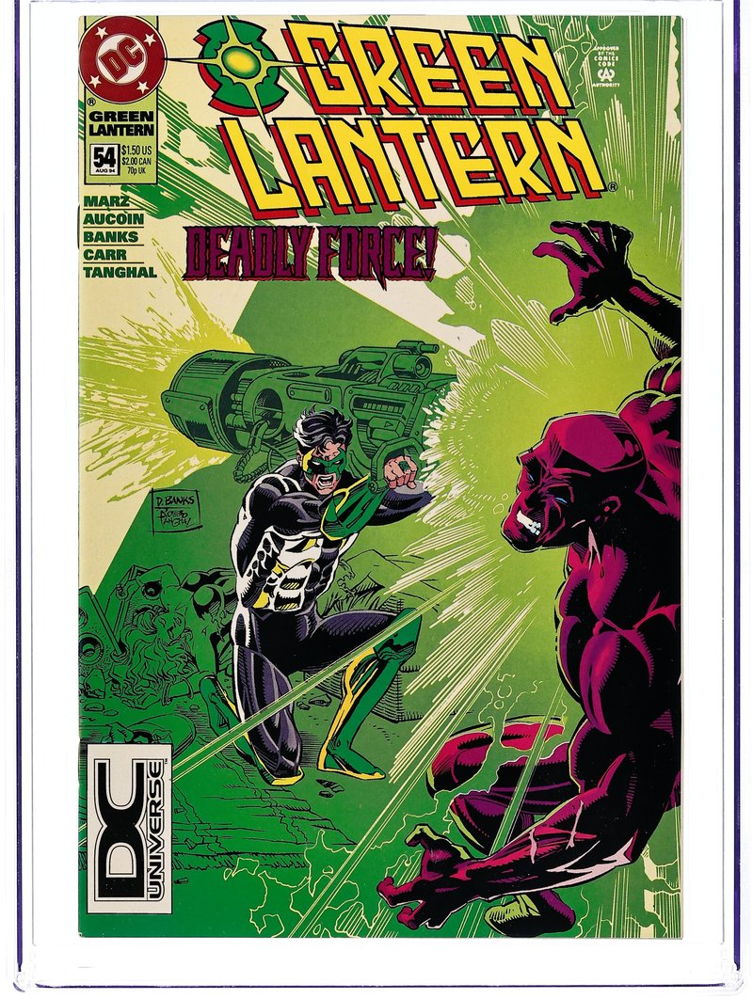

In-Universe History · 1994
The Death of Alexandra DeWitt
A loss that changed Kyle Rayner — and changed comics forever.

1994
The story
Alexandra DeWitt was a photographer — sharp, kind, and unwilling to put up with immaturity. Introduced in Green Lantern vol. 3 #48 (January 1994) alongside Kyle Rayner himself, she had dumped Kyle once already; only after he received the last power ring did she agree to give them another chance. She lasted six issues.
In Green Lantern vol. 3 #54, "Forced Entry" (August 1994, Ron Marz and Darryl Banks), the villain Major Force came hunting Kyle's ring — and found Alex home alone instead. He murdered her and left her body for Kyle to discover. Writer Ron Marz later explained his intent: he built Alex up deliberately so readers would like her, because he wanted her death to horrify — to teach Kyle, in the most brutal way possible, that being Green Lantern wasn't fun and games, and to sever the new Lantern's ties to his old life.
It worked — and then it echoed far beyond one comic. In 1999, writer Gail Simone named the trope after this exact issue: "Women in Refrigerators," describing the pattern of female characters harmed or killed to motivate male heroes. "Fridging" entered the critical vocabulary of all of pop culture, and this issue is its ground zero. Alex herself later returned as a Black Lantern during Blackest Night, haunting Kyle from beyond death.
We tell this story here not for shock, but because it's honest comics history: a single issue of Green Lantern forced the entire industry to confront how it treated its women — and the conversation it started is still going.
Green Lantern (1990) #54 — main cover photograph. Darryl Banks (cover pencils); Romeo Tanghal (cover inks). Artwork source & details.
Artwork credits (1 image)
Credits refer to the illustrations shown here. Open a record for sources, adaptations and unresolved details. Some artwork and source pages contain story spoilers.
- Alex Dewitt — Green Lantern (1990) #54 — main cover photograph. Darryl Banks (cover pencils); Romeo Tanghal (cover inks).